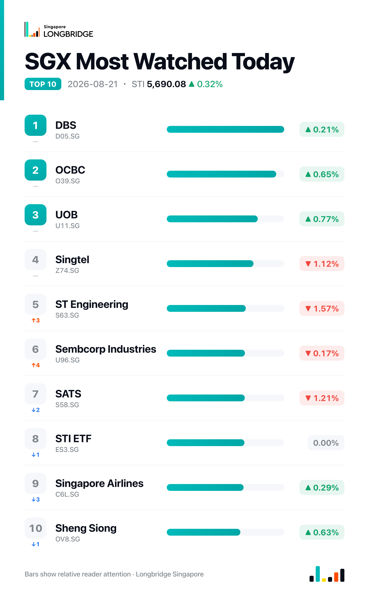

STI Rises 0.32% to 5,690.08 as Broad Advance Bypasses the Banks; SATS Extends Post-Earnings Slide
The Straits Times Index closed at 5,690.08 on Friday, up 18.17 points, or 0.32%, after opening lower and touching a session low of 5,640.06 — briefly wiping out Thursday's gain — before rallying through the day to a high of 5,692.76 and finishing near that mark. Advancers outnumbered decliners 19 to 6 among the benchmark's 30 constituents, with five unchanged, as the rebound broadened out well beyond the handful of stocks that typically set the day's direction.
The advance was led by property developers, marine and offshore names, and agribusiness rather than the index's traditional heavyweights: City Developments, Seatrium, Wilmar and Yangzijiang Shipbuilding each added more than 1.2%, and real estate investment trusts including CapitaLand Ascendas REIT and Hongkong Land also joined the move. The three local banks, which have driven much of the index's daily swings through August, posted smaller gains of 0.21% to 0.77%, while Singtel, SATS and ST Engineering were the session's laggards.
Session Movers
City Developments (C09.SG, +1.73%) extended its recovery, continuing to digest the H1 2026 results disclosed Aug. 13 that showed net income surging roughly 249% to S$301.6 million on a 61% rise in revenue, driven by the property-development business and a turnaround at its hotels. DBS maintained a Buy rating on Aug. 14 with a S$12.00 target, above the Street's S$10.57 consensus target, which implies about 28% upside from current levels; gearing, however, climbed to 75% on land purchases, a point flagged alongside the results. The stock trades at 0.775 times book, roughly the midpoint of its one-year range.
ST Engineering (S63.SG, -1.57%) gave back a further slice of its post-earnings run-up, extending a pullback that has followed its Aug. 13 H1 results — net profit up 27.1% to S$512 million on revenue of S$6.57 billion, alongside a S$0.05 dividend. Phillip Securities and DBS both reiterated Buy ratings this month, at S$13.00 and S$12.40 targets respectively, but the stock's price-earnings ratio of 59.16 times sits above its own five-year range and cheaper than only about 9% of that period — a valuation stretch the market appears to still be working off.
Singtel (Z74.SG, -1.12%) retraced part of this week's advance, which had been driven by S&P Global's Aug. 19 upgrade of its credit rating to A+/A-1 and the Aug. 17 launch of GXS Bank's second credit card, built around Grab and Singtel spending with up to 10% GrabCoins cashback. No fresh company disclosure accompanied Friday's pullback. Shares trade at 20.5 times earnings, cheaper than roughly 39% of the past five years, with a consensus Buy rating and a S$5.32 target implying about 21% upside.
SATS (S58.SG, -1.21%) extended its slide a second session after Thursday's 13.63% plunge, which followed first-quarter FY2027 results showing net profit up 6% to S$75.1 million and revenue up 11.3% to S$1.68 billion, but an operating margin that slipped to 8% under Middle East-related and inflationary cost pressures. The consensus rating remains Strong Buy, with a S$5.03 target implying roughly 24% upside from current levels; the stock trades at 2.23 times book, close to its 10-year median.

One point worth noting
Friday's advance was broad but not led by the index's biggest names: the three local banks — DBS, OCBC and UOB — added between 0.21% and 0.77%, trailing gains of 1.2% or more at City Developments, Seatrium, Wilmar and Yangzijiang Shipbuilding. That is a reversal of the pattern that has driven much of August's daily swings, when bank-stock moves — often in one direction together, sometimes split two-and-one — have set the index's course; Friday marked one of the few sessions this month where broad participation, rather than the banks, did the work, with 19 of 30 constituents advancing against just six decliners.
This recap is for informational purposes only and does not constitute investment advice.